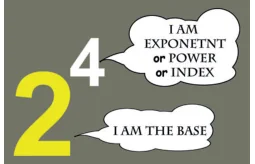
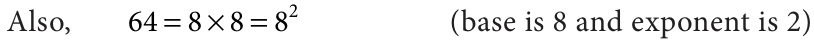
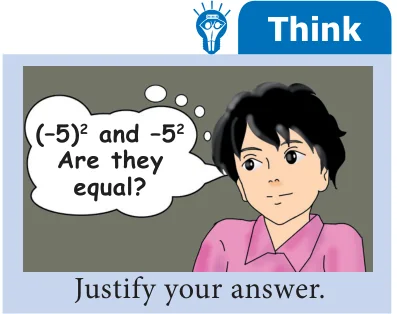
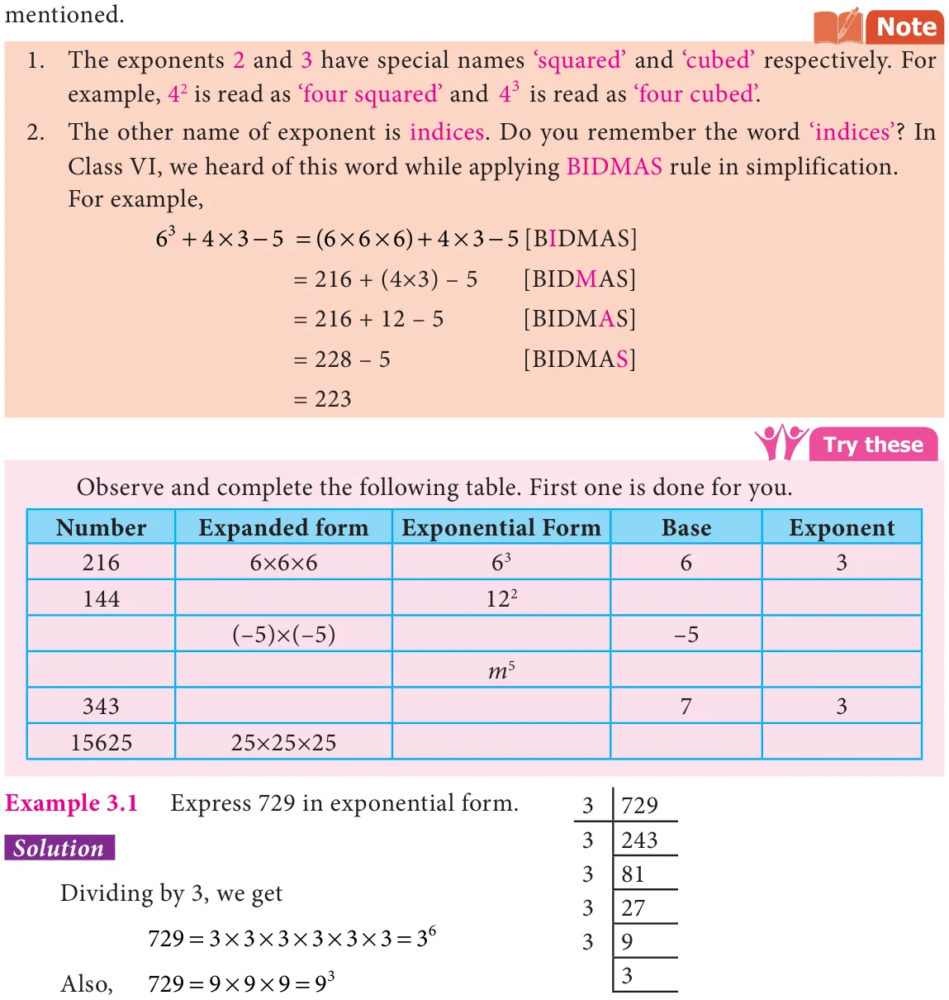
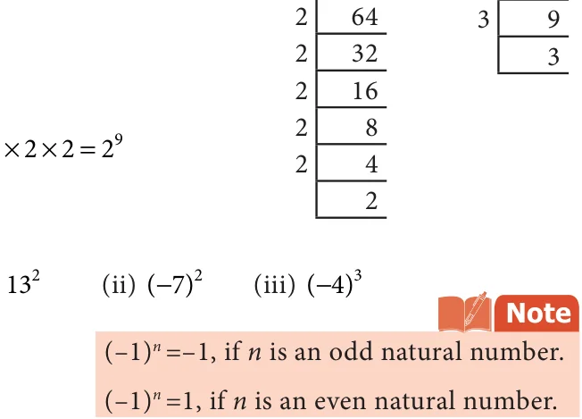
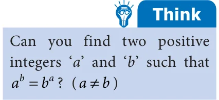

We can write large numbers in simplified form as given below. For example, \(16 = 8 \times 2 = 4 \times 2 \times 2 = 2 \times 2 \times 2 \times 2\)
Instead of writing the factor 2 repeatedly 4 times, we can simply write it as 2 . It can be read as 2 raised to the power of 4 or 2 to the power of 4 or simply 2 power 4.
This method of representing a number is called the exponential form. We say 2 is the
Let us look at some more examples,
\(= \times \times =\) (base is 4 and exponent is 3) Also, \(= \times =\) (base is 8 and exponent is \(2) = \times \times \times \times =\) (base is 3 and exponent is \(5) = \times \times =\) (base is 5 and exponent is 3)

Remember, when a number is expressed as a product of factors and when the factors are repeated, then it can be expressed in the exponential form. The repeated factor will be the base and the number of times the factor repeats will be its exponent.
We can extend this notation to negative integers also. For example,
\(- 125 =\) ( \(- 5) \times\) ( \(- 5) \times\) ( \(- 5) =\) ( \(- 5)\) [base is ‘ - 5’ and exponent is 3]
Hence, ( \(- 5)\) is the exponential form of \(- 125\) .
MATHEMATICS ALIVE - Algebra in Real Life
In a calculator, multiplication of two large numbers is
displayed as 1.219326E17 which means 1 219326. \(\times 10\) where, ‘E’ stands for exponent with base 10.
Numbers in Exponential Form
Now, we will see how to express numbers in exponential form. Let us take any integer as ‘a’.
Then, \(a = a\) [‘a power 1’]
\(a \times a = a\) [‘a power 2’ ; ‘a’ is multiplied by itself 2 times]
\(a \times a \times a = a\) [‘a power 3’ ; ‘a’ is multiplied by itself 3 times]
\(a \times a \times\) \(\times\) a(n times) \(= a\) [‘a power n’ ; ‘a’ multiplied by itself n times]
Thus we can generalize the exponential form as a , where the exponent is a positive
integer (n \(> 0)\).
Observe, the following examples.

\(100 =10 \times 10 =10\)
This can also be expressed as the product of two different bases with the same exponent as,
\(100 = 25 \times 4 = (5 \times 5) \times (2 \times 2) = 5 \times 2\)
We notice that 5 and 2 are the bases and 2 is the exponent.
In the same way, \(a \times a \times a \times b \times b = a \times b\) Fig. 3.2
Consider, \(35 = \times\) , where there is no repetition of factors. Thus, usually \(7 \times 5\) is represented as \(7 \times 5\). So, when the power is 1 the exponent will not be explicitly

Example 3.2 Express the following numbers in exponential form with the given base:
- (i)1000, base 10 (ii) 512, base 2 (iii) 243, base 3.

Solution
- (i)\(1000 =10 \times 10 \times 10 =10\)
- (ii)\(512 = 2 \times 2 \times 2 \times 2 \times 2 \times 2 \times \times \times =\)
- (iii)\(243 = 3 \times 3 \times 3 \times 3 \times 3 =\)
Example 3.3 Find the value of (i) 13 ( - ) ( - )
Solution
- (i)\(13 =13 \times 13 =\)
- (ii)( \(- 7) =\) ( \(- 7) \times\) ( \(- 7) = 49\)

- (iii)( \(- 4) =\) ( \(- 4) \times\) ( \(- 4) \times\) ( \(- 4)\)
\(=16 \times\) ( \(- 4) = - 64\)
Example 3.4 Find the value of \(2 + 3\)
Solution
\(2 + 3 = (2 \times 2 \times 2)+ (3 \times 3)\)
\(= 8 + 9 =17\)
_{4} _{3} Ancient Tamilians have Example 3.5 Which is greater 3 or 4 ? used lot of greater numbers in Solution their day-to-day life. Refer to \(3^{4} = 3 \times 3 \times 3 \times 3 = 81\) Kanakkathikaram written by a saint _{3} Karinayanar who lived in Tamilnadu
\(4 = 4 \times 4 \times 4 = 64 _{th}\)
81> 64 gives \(3 > 4\) they fixed a unique name for every big Therefore, \(3^{4}\) is greater. number. For example, ‘Arpudham’ means Ten crores, ‘Padmam’ means Example 3.6 Expand \(a^{3}b^{2}\) and \(a^{2}b^{3}\) . \(10^{14}\) , ‘Anantham’ means \(10^{29}\) and the Are they equal? word ‘Avviyatham’ denotes \(10^{35}\).
Solution Pingalandai Nigandu Vaipaadu, \(a^{3}b^{2} =\) (a \(\times a \times\) a) \(\times\) (b \(\times\) b) an ancient Tamil Mathematics treatise, _{2} _{3} also confirms the usage of such big \(a b =\) (a \(\times\) a) \(\times\) (b \(\times b \times\) b) numbers. It is a book of multiplication
Therefore, \(a b \ne a b\) table.